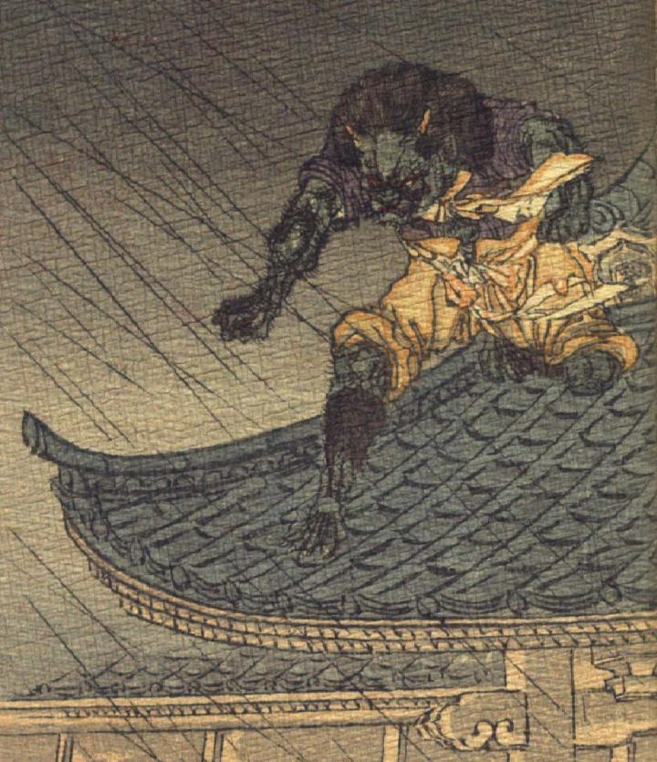

緑色の肌の鬼。禿げ上がった頭頂に2本の角が生えている。後頭部に生えた髪は逆立ち、耳は獣のように尖っている。額に深く皺が寄り、目は釣りあがり、鼻は潰れている。薄い口ひげ、あごひげを生やしている。紫色の着物に、薄茶色の肩布と袴を身に着けて、袖と裾を捲り上げている。腕脚は筋肉が隆々としており、毛が生えている。瓦屋根の上に立ち、上半身を屈めて、腕を差し出し、屋根の下をうかがっている。
著作者：J.Dautremer／出典：親書誌：U426_nichibunken_0121：Le bras de l'ogre／日付：2003／資源識別子：U426_nichibunken_0121_0002_0000
Copyright (c)2010- International Research Center for Japanese Studies, Kyoto, Japan. All rights reserved.